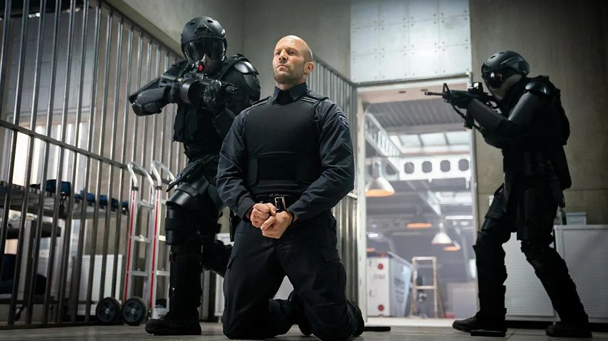
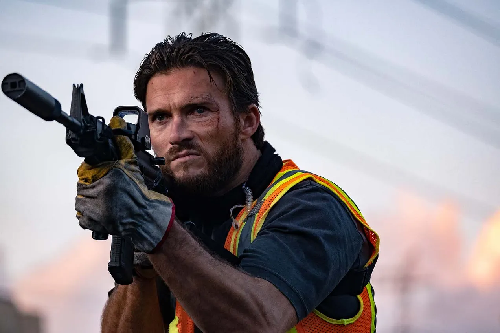

Despierta la furia
El Ritchie que nadie esperaba

Guy Ritchie tiene un estilo inconfundible: edición frenética, humor gamberro, diálogos que se muerden la cola, personajes con nombres ridículos que se cruzan en coreografías imposibles. Una firma que funciona y que uno reconoce a los cinco minutos de cualquiera de sus películas.
Wrath of Man es otra cosa. Y la sorpresa es mayúscula.
Ritchie tira por la borda casi todos sus tics y entrega algo crudo, duro y violento. Sin guiños al espectador. Sin ironía de diseño. Una película que va en serio desde el primer minuto. Y el tío perfecto para protagonizarla resulta ser el mismo con el que empezó todo.
Jason Statham vendía joyas en la calle antes de que Ritchie lo fichara para Lock, Stock and Two Smoking Barrels — igual que su personaje en aquella película. Veintitrés años después vuelven a trabajar juntos, y la reunión le sienta bien a los dos. Statham está contenido y rabioso a partes iguales, en modo venganza pura, sin el barniz de héroe de acción al que otros directores lo tienen condenado. Aquí no explica nada, pero la película te da las razones justas para entenderle, sin necesidad de subrayarlas ni apelar a la lágrima fácil.

El reparto que le rodea está espléndido. Jeffrey Donovan y Scott Eastwood se lucen como villanos, con esa frialdad calculada que necesita la historia. Y alrededor de ellos, una constelación de rostros principalmente televisivos que aportan textura sin robar protagonismo — caras conocidas que uno no termina de ubicar del todo, y que encajan perfectamente en este mundo de tipos sin glamour.

La estructura en capítulos funciona mejor de lo que cabría esperar — no como experimento formal, sino como herramienta para sostener la tensión y dosificar la información justa. Y cuando todo confluye, el resultado es sólido, sin artificios.
No es perfecta. La única pega es que llegado a cierto punto la película cae en la tentación del héroe invulnerable — Statham encaja una cantidad absurda de disparos y sigue en pie como si tal cosa, lo que chirría un poco en una película que hasta ese momento había apostado por la crudeza y el realismo. Un traspié menor, pero que se nota.
Pero con un presupuesto de 40 millones recaudó más de 100 en todo el mundo, y tiene todo el sentido: es el tipo de película que engancha en sala y que la gente recomienda al salir. Lo mejor que ha firmado Ritchie en mucho tiempo. Precisamente porque, durante hora y media, parece que no es suya.
Ficha técnica
- Título original: Wrath of Man
- Dirigida por: Guy Ritchie
- Basada en: Le Convoyeur (2004), de Nicolas Boukhrief
- Reparto principal: Jason Statham, Holt McCallany, Josh Hartnett, Jeffrey Donovan, Scott Eastwood, Andy Garcia, Eddie Marsan, Laz Alonso, Raúl Castillo, Deobia Oparei
- Año: 2021
- Duración: 1h 59m
- Dónde verla: alquiler o compra en Amazon Prime Video y Apple TV